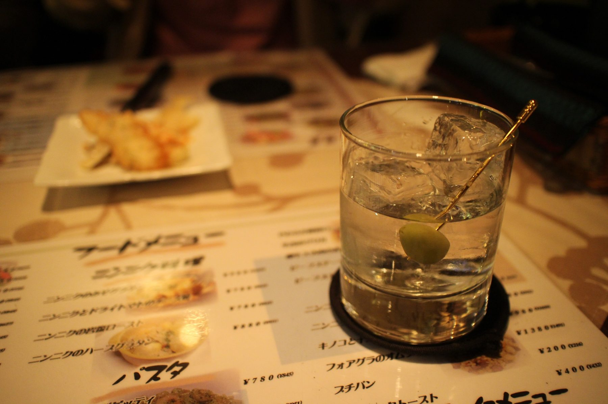

小説と音楽と写真の部屋へ、ようこそ。
ひとりの書斎から、季節の便りを
29作。いずれも縦書きの小説として書き下ろし、ドラマ脚本も用意しています。
SUNOで作った曲です。曲名を押すと、その場で聴けます。気に入った曲はダウンロードもできます。
自分の目で見て、自分で撮った風景です。フォルダを押すと、全画面のスライドショーで見られます（BGMは自作のインストゥルメンタルから）。
映像で綴っているチャンネルです。
小説や曲、写真へのご感想をお寄せください。いただいたコメントは、すべてこの欄で公開します。
送られたコメントは、お名前とともにこのページで公開されます。
hiroitakashi@gmail.com
メールソフトが開かないときは、文面をコピーして上のアドレスへお送りください。